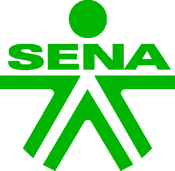
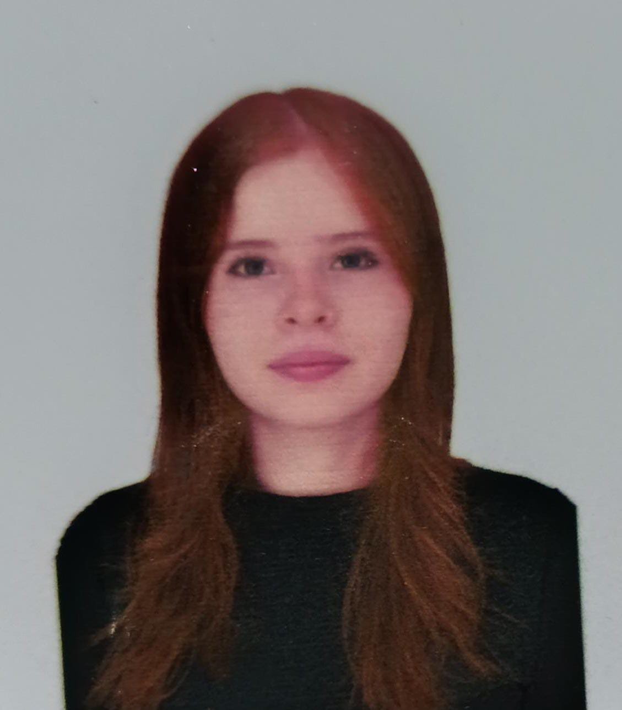

PRESENTACIÓN PERSONAL
Nikoll Tatiana Guaca Hoyos

Soy aprendiz del Sena del tecnologo en analisi y desarrollo de software. Estoy aprendiendo a desarrollar con codigo Html en visual studio code, y lo que busco es poder desarrollar de forma correcta mi prrograma con bastante conocimiento en lo que voy a trabajar
Tecnólogo en Análisis y Desarrollo de Software
"Estudiante de tecnología apasionada por la programación y la innovación."
Español (nativo)
GitHub
SOBRE MI
Soy una persona creativa y dedicada con mi formación como desarrolladora de software.Me gusta aprender cosas nuevas cada día en las diferentes competencias que se dan en el sena, al igual que me gusta a veces adquirir nuevos conocimienttos por mi propia cuenta con investigaciones
Actualmente estudio el Tecnologo en Análisis y Desarrollo de Software en el Sena. Me estoy formando como desarrolladora web, aprendiendo sobre HTML,CSS y herramientas de desarrollo. Me gusta la tecnología,el diseño de paginas web y resolver problemas con soluciones digitales. MI meta es hacer parte de un equipo de trabajp donde pueda seguir aprendiendo y aportar en proyectos tecnologicos reales